QMEL Forecasting Workshop - Wk 2 Time Series Graphics and Decomposition
Welcome QMEL!
Today we will be discussing Chapters 2 and 3 of Foresting: Principles and Practice by Hyndman and Athanasopoulos
For those familiar with time series analysis these chapters may be review, but concepts presented here serve as important building blocks for forecasting!
Overview
For each chapter:
Quickly review important concepts from the chapter
Use some of these methods on personal data
Review chapter exercises
At the end:
Work on the Ginkgo data set?
Chapter 2 - Time series graphics
Notes from the chapter:
Using the tsibble package and tsibble objects
Describing time series data
Trend - A long term increase of decrease in the data. This does not have to be linear, it can sometimes “change directions”.
Seasonal - A seasonal pattern occurs when a time series is affected by seasonal factors such as the time of year or the day of the week. Seasonality is always of a fixed and known period.
Cyclic - A cycle occurs when the data exhibits rises and falls that are not of a fixed frequency.
In general, the average length of cycles is longer than the length of a seasonal pattern and the magnitudes of cycles tend to be more variable than the magnitudes of seasonal patterns.
Types of plots
Time plots - observations are plotted against the time of observation - autoplot()
Seasonal plots - data are plotted against the individual “seasons” - gg_season()
Subseries plots - data for each season are collected together in separate mini time plots - gg_subseries()
Scatter plots - useful for visualizing individual time series, and useful to explore the relationships between time series
Lag plots - shows lagged values of the time series - gg_lag()
Autocorrelation - measures the linear relationship between lagged values of a time series - ACF()
White noise - time series that have no autocorrelation
Data Examples
Here I will use some of these functions to plot temperature data from a kelp forest site that is part of the Santa Barbara Coastal LTER (AQUE).
Figure:Map of SBC LTER Sites
This data can be found here: https://sbclter.msi.ucsb.edu/data/catalog/package/?package=knb-lter-sbc.13
# Loading packageslibrary(tidyverse)
── Attaching core tidyverse packages ──────────────────────── tidyverse 2.0.0 ──
✔ dplyr 1.1.4 ✔ readr 2.1.5
✔ forcats 1.0.0 ✔ stringr 1.5.1
✔ ggplot2 3.5.2 ✔ tibble 3.2.1
✔ lubridate 1.9.4 ✔ tidyr 1.3.1
✔ purrr 1.0.4
── Conflicts ────────────────────────────────────────── tidyverse_conflicts() ──
✖ purrr::%||%() masks base::%||%()
✖ dplyr::filter() masks stats::filter()
✖ dplyr::lag() masks stats::lag()
ℹ Use the conflicted package (<http://conflicted.r-lib.org/>) to force all conflicts to become errors
library(tsibble)
Registered S3 method overwritten by 'tsibble':
method from
as_tibble.grouped_df dplyr
Attaching package: 'tsibble'
The following object is masked from 'package:lubridate':
interval
The following objects are masked from 'package:base':
intersect, setdiff, union
library(here)
here() starts at C:/Users/drewv/Documents/R/qmel_forecasts
library(janitor)
Attaching package: 'janitor'
The following objects are masked from 'package:stats':
chisq.test, fisher.test
Rows: 13559758 Columns: 5
── Column specification ────────────────────────────────────────────────────────
Delimiter: ","
chr (1): SITE
dbl (2): SERIAL, TEMP_C
date (1): DATE_LOCAL
time (1): TIME_LOCAL
ℹ Use `spec()` to retrieve the full column specification for this data.
ℹ Specify the column types or set `show_col_types = FALSE` to quiet this message.
`summarise()` has grouped output by 'year'. You can override using the
`.groups` argument.
monthly_aque_temp |>autoplot(mean_temp)
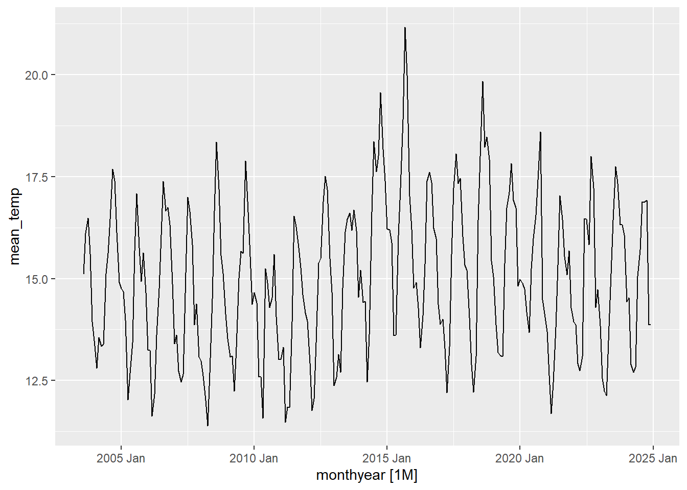
monthly_aque_temp|>gg_season(mean_temp)
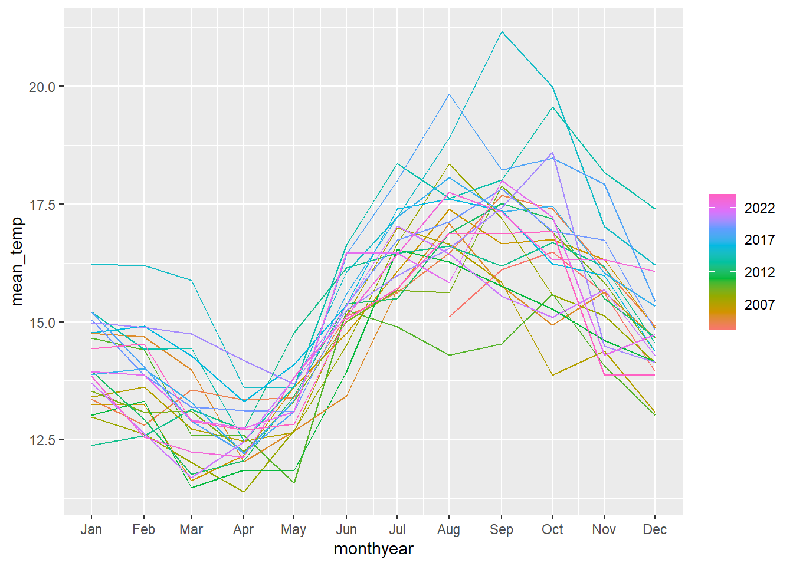
monthly_aque_temp|>gg_subseries(mean_temp)
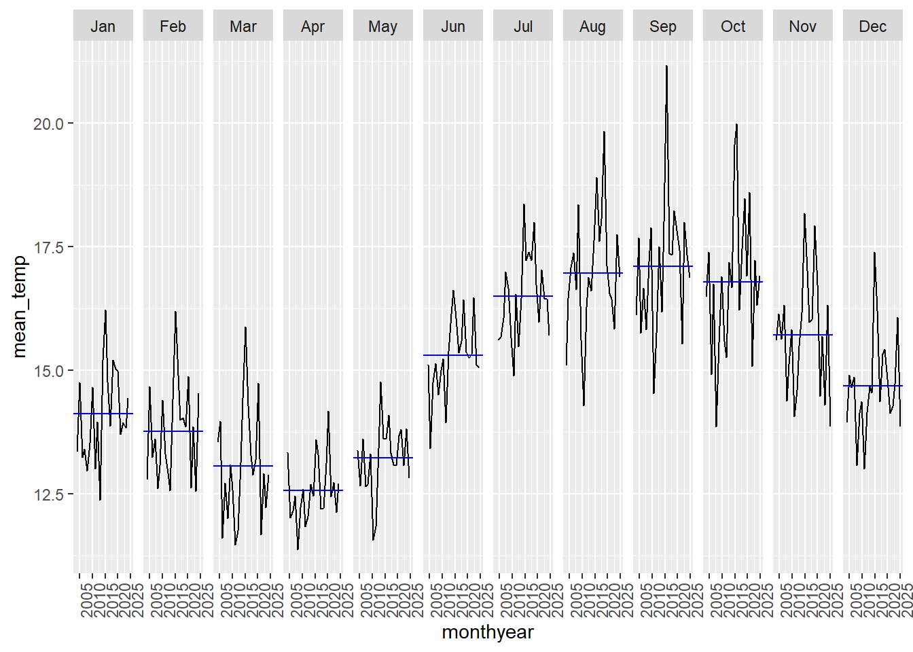
monthly_aque_temp |>gg_lag(mean_temp)
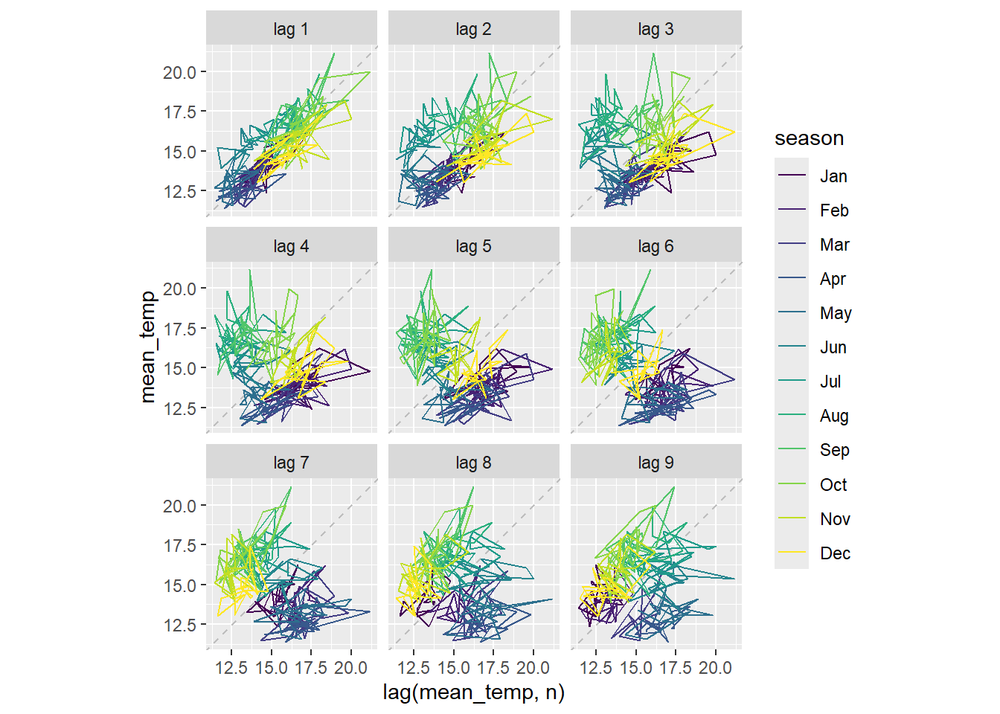
monthly_aque_temp |>ACF(mean_temp) |>autoplot()
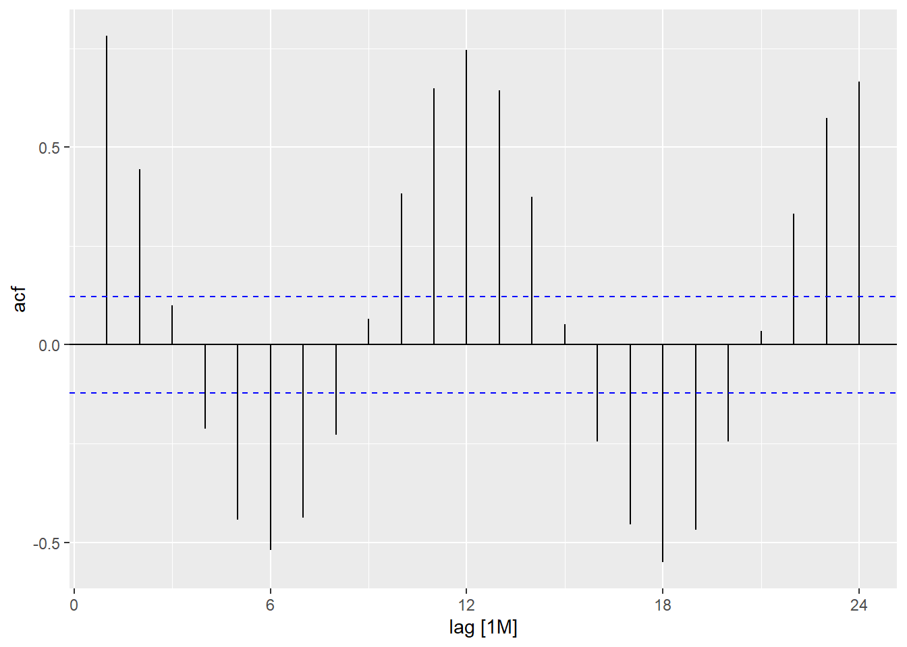
What are some are some observations that we can make from these plots? How might these methods help you better understand your data?
Exercises from the text
Monthly Australian retail data is provided in aus_retail. Select one of the time series as follows (but choose your own seed value):
aus_retail
# A tsibble: 64,532 x 5 [1M]
# Key: State, Industry [152]
State Industry `Series ID` Month Turnover
<chr> <chr> <chr> <mth> <dbl>
1 Australian Capital Territory Cafes, restaurant… A3349849A 1982 Apr 4.4
2 Australian Capital Territory Cafes, restaurant… A3349849A 1982 May 3.4
3 Australian Capital Territory Cafes, restaurant… A3349849A 1982 Jun 3.6
4 Australian Capital Territory Cafes, restaurant… A3349849A 1982 Jul 4
5 Australian Capital Territory Cafes, restaurant… A3349849A 1982 Aug 3.6
6 Australian Capital Territory Cafes, restaurant… A3349849A 1982 Sep 4.2
7 Australian Capital Territory Cafes, restaurant… A3349849A 1982 Oct 4.8
8 Australian Capital Territory Cafes, restaurant… A3349849A 1982 Nov 5.4
9 Australian Capital Territory Cafes, restaurant… A3349849A 1982 Dec 6.9
10 Australian Capital Territory Cafes, restaurant… A3349849A 1983 Jan 3.8
# ℹ 64,522 more rows
# I see an obviously increasing trend and maybe cyclicity, but there is not any obvious seasonality. myseries |>gg_season(Turnover)
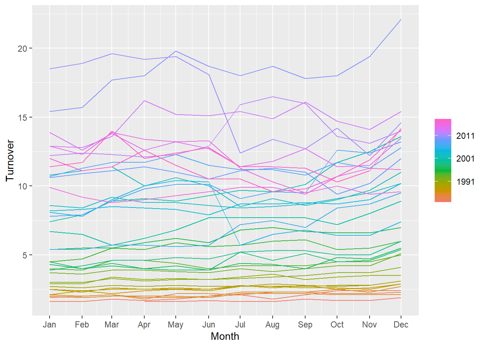
# Again not seeing a seasonality, but there is increased variability in the later years.myseries |>gg_subseries(Turnover)
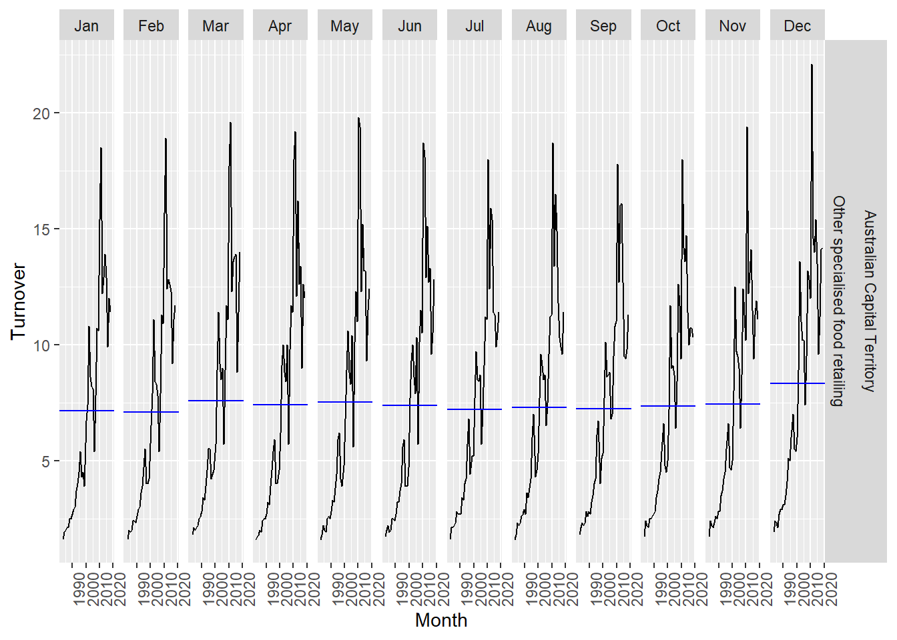
# Only seasonality is just a small uptick in December maybe related to more shopping during the holidays. There turnover for these items reached their peak in early 2000's, but then decreased.myseries |>gg_lag(Turnover)
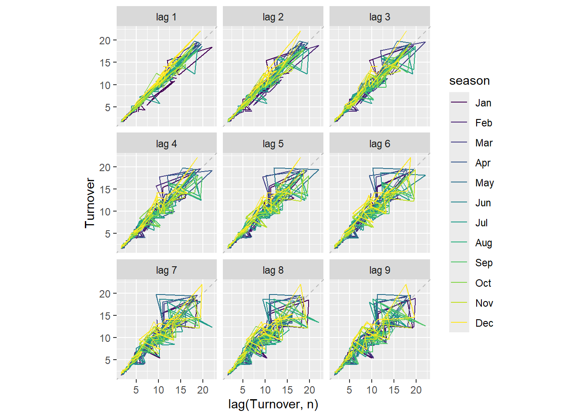
myseries |>ACF(Turnover) |>autoplot()
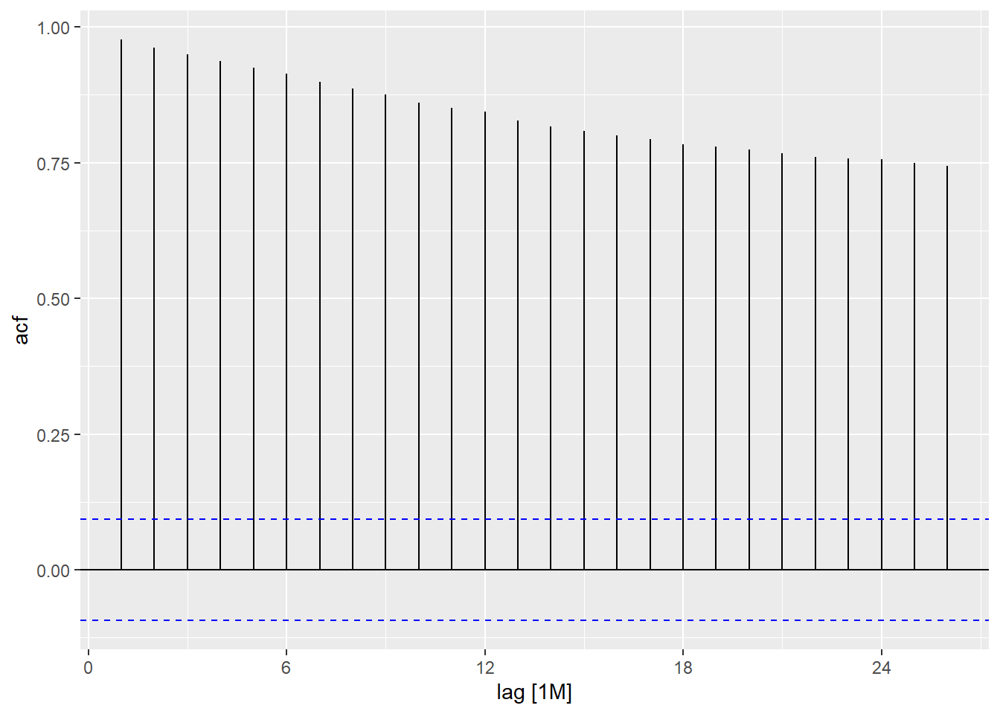
# Just annual cycles?
Chapter 3 - Time series decomposition
Notes from the chapter:
We can think of a time series as comprising three components: a trend-cycle component, a seasonal component, and a remainder component (containing anything else in the time series). This chapter explores common methods for extracting these components from a time series. This can help us better understand the time series, but also improve forecasting accuracy. Before decomposition, transformation is sometimes needed, so we will touch on that too!
Types of transformation:
Calendar adjustments
Population adjustments
Inflation adjustments
Mathematical transformations - When variation in the data changes throughout the time series, transformations can be helpful.
log transformation
power transformation
Box-Cox transformations - includes both logarithms and power transformations.
Time series components - trend, season, and remainder
Moving averages - the first step in classical decomposition methods
Methods for decomposition
Classical decomposition (additive and multiplicative)
Widely used, but not recommended. Issues include the loss of the first and last few observations when estimating the trend cycle. Trend-cycle estimate tends to over-smooth data. Assumes that the seasonal component repeats from year to year. Not very good at dealing with “unusual” values.
X-11
Includes extra steps to overcome some of the shortfalls of classical decomposition, which include the end points, and the seasonal component is allowed to vary slowly over time. Methods for both additive and multiplicative decomposition. Robust to outliers.
SEATS
STL - Seasonal and Trend decomposition using Loess
Can handle any type of seasonality. The trend-cycle can also be controlled by the user. Robust to outliers
Warning: Removed 6 rows containing missing values or values outside the scale range
(`geom_line()`).
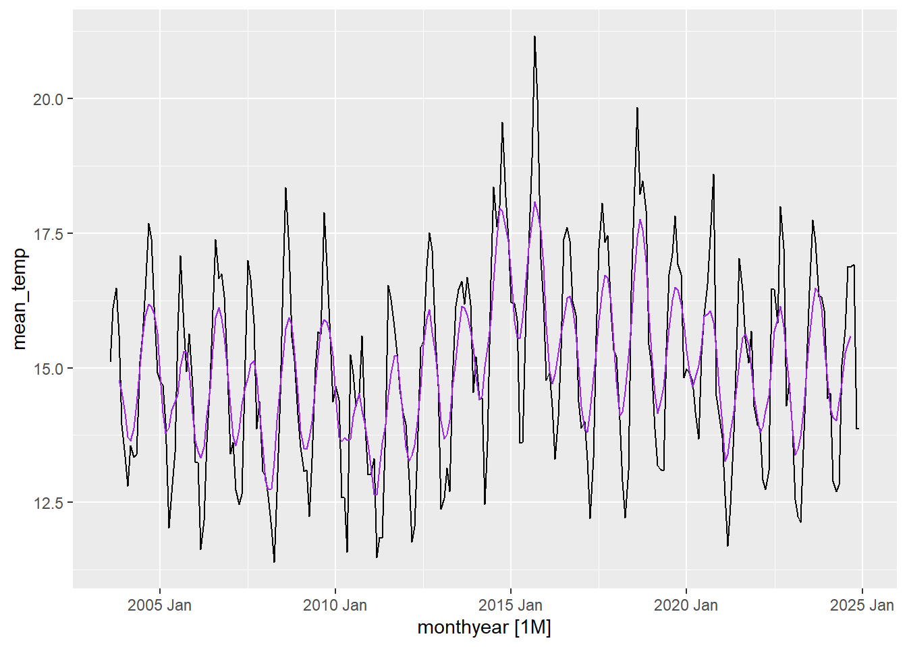
# Decomposing the time seriesdcmp<-monthly_aque_temp |>model(stl =STL(mean_temp))# Looking at the different compnentscomponents(dcmp) |>autoplot()
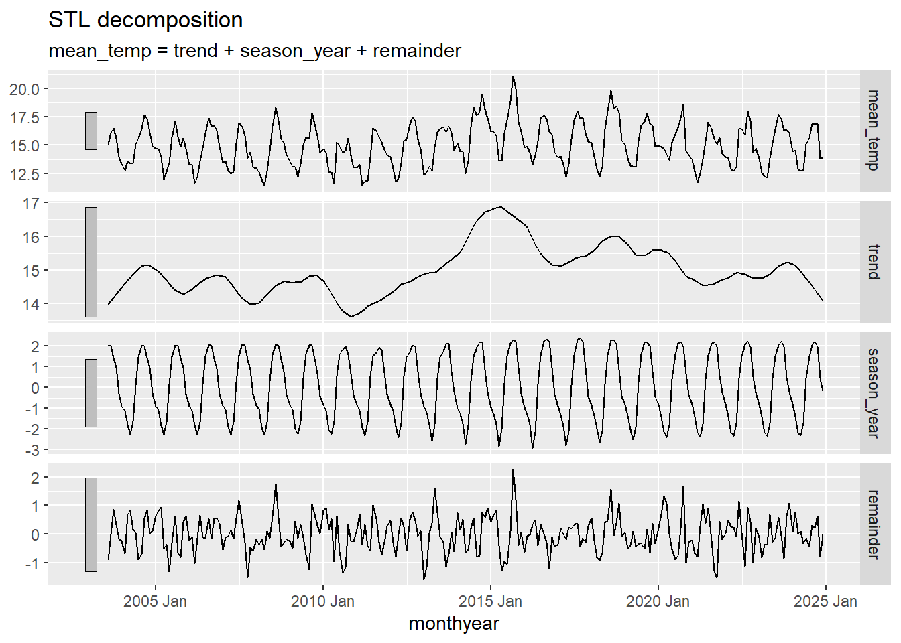
components(dcmp) |>as_tsibble() |>autoplot(mean_temp, colour="gray") +geom_line(aes(y=trend), colour ="purple") +labs(y ="Mean Monthly Temp (C)",title ="Benthic Temperature at AQUE Kelp Forest Site")
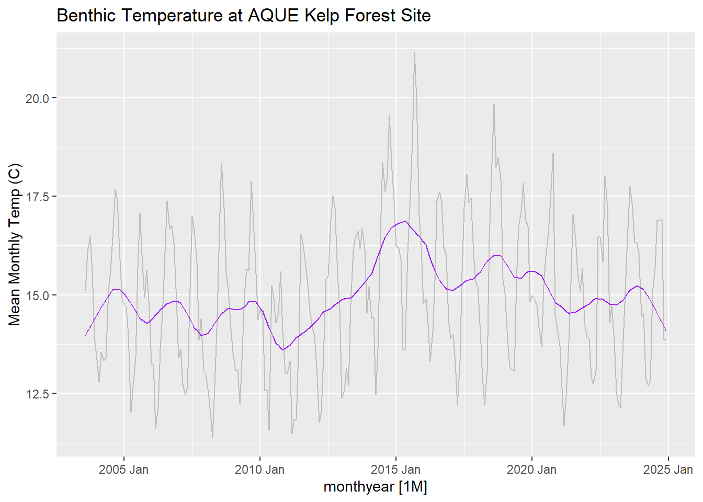
# Seasonally adjusted time series - contains the remainder and trendcomponents(dcmp) |>as_tsibble() |>autoplot(mean_temp, colour ="gray") +geom_line(aes(y=season_adjust), colour ="#0072B2") +labs(y ="Mean Monthly Temp (C)",title ="Benthic Temperature at AQUE Kelp Forest Site")